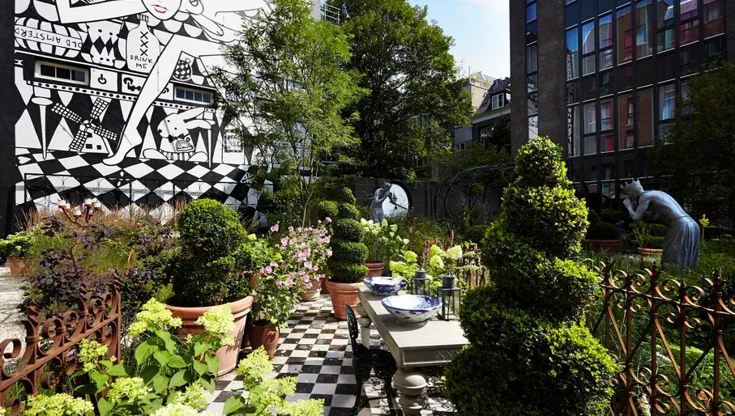
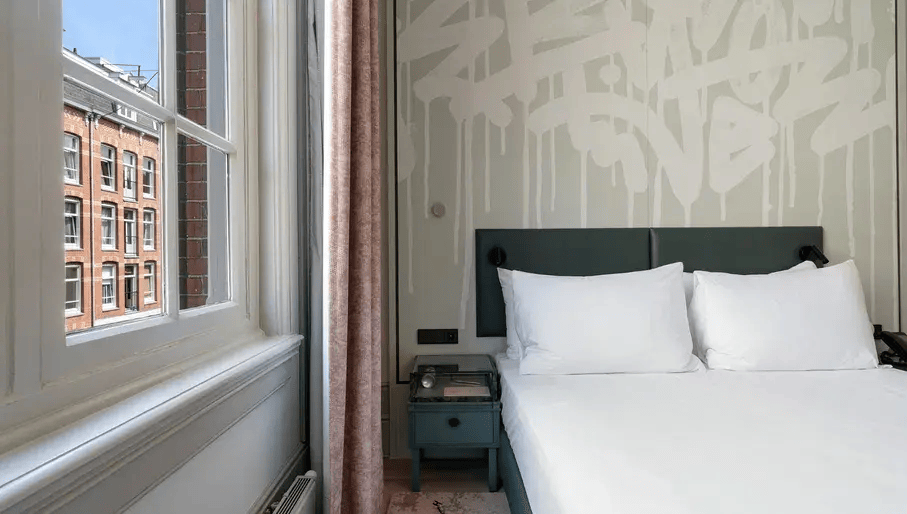

Pulitzer

The Pulitzer Amsterdam is one of the most fabulous hotels in the city, and if your budget can stretch to it, there’s a huge amount on offer for families. From interconnected rooms to large family rooms and suites, the experience is enhanced by child-friendly amenities, gardens, and a family-friendly approach in the restaurant. It's a wonderful place that is surprisingly brilliant for kids.
Andaz Amsterdam Prinsengracht

The Andaz Amsterdam Prinsengracht is a whimsical, Alice in Wonderland-inspired hotel set along one of Amsterdam’s most picturesque canals. The enchanting design extends throughout the hotel, making it a truly magical experience for families. Spacious suites and garden-view rooms can comfortably accommodate up to three guests, and interconnecting rooms are available for larger families, ensuring everyone stays connected. Families can also enjoy thoughtful amenities, such as babysitting services and kid-sized portions at the on-site restaurant. For furry family members, the hotel offers a delightful "Very Important Dog" program, ensuring even pets are treated to a VIP experience.
The College Hotel

The fabulous College Hotel is a former school now staffed by hotel management students. Deluxe rooms and Junior Suites can accommodate three, and interconnecting rooms are available for bigger families. Cots and babysitting can be arranged, and children are welcome in the gorgeous lounge. The hotel is perfectly positioned with access to the city centre, leafy Zuid, and the buzzing De Pijp neighbourhood.